PSAT-상황판단 (2015-02-07 기출문제)
1. 다음 글을 근거로 판단할 때 옳은 것은?
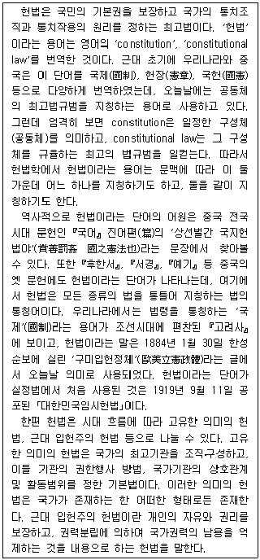
- 개인의 자유를 보장하지 않은 헌법도 근대 입헌주의 헌법이라 할 수 있다.
- 고려사에 기록된 국제(國制)라는 용어는 오늘날 통용되는 헌법의 의미로 사용되었다.
- 헌법학에서 사용하는 헌법이라는 용어는 최고의 법규범이 아닌 일정한 구성체를 지칭하기도 한다.
- 근대 입헌주의 헌법과 비교할 때, 고유한 의미의 헌법은 국가권력의 조직ㆍ구성보다는 국가권력의 제한에 그 초점을 둔다고 할 수 있다.
- 중국에서 헌법이라는 용어는 처음에는 최고법규범을 의미했지만, 현재는 다양한 종류의 법이 혼합된 형태를 의미하는 용어로 사용된다.
(정답률: 알수없음)

2. 다음 글을 근거로 판단할 때 옳은 것은?
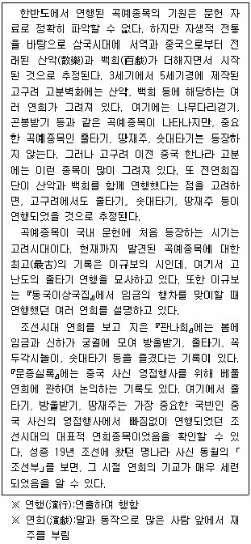
- 고려시대와 조선시대의 임금은 연희를 볼 기회가 없었다.
- 한반도에서 연행된 곡예종목의 기원을 고려시대 문헌 자료를 통해서는 정확히 알 수 없다.
- 한나라 고분벽화에서는 줄타기, 땅재주, 솟대타기 그림을 찾을 수 없다.
- 중국 사신 동월은 고려시대 연희의 세련된 기교를 칭찬하는 기록을 남겼다.
- 고구려에서는 나무다리걷기, 곤봉받기 등의 곡예 외에 줄타기, 땅재주, 솟대타기 등은 연행되지 않았을 것으로 추정된다.
(정답률: 알수없음)
3. 다음 글을 근거로 추론할 때, ＜보기＞에서 옳은 것만을 모두 고르면?
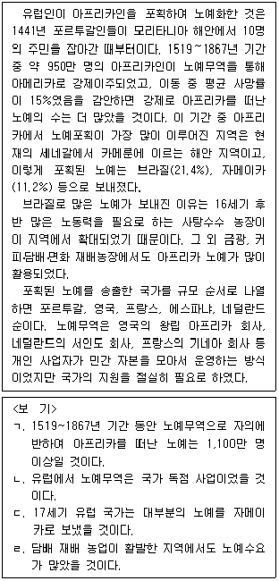
- ㄱ
- ㄴ
- ㄱ, ㄹ
- ㄴ, ㄹ
- ㄱ, ㄷ, ㄹ
(정답률: 알수없음)
4. 다음 글과 <상황>을 근거로 판단할 때 옳은 것은?
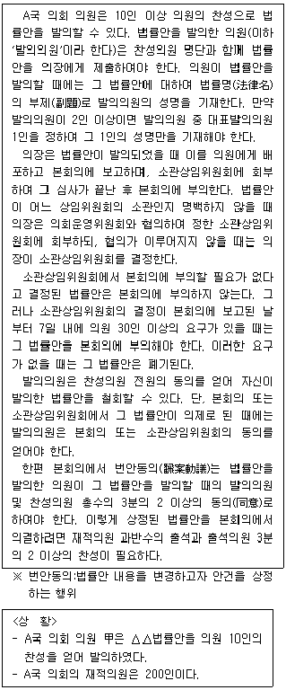
- △△법률안 법률명의 부제로 의원 甲의 성명을 기재한다.
- △△법률안이 어느 상임위원회 소관인지 명확하지 않을 경우 본회의의 의결로 소관상임위원회를 결정한다.
- 의원 甲은 △△법률안이 소관상임위원회의 의제가 되기 전이면, 단독으로 그 법률안을 철회할 수 있다.
- △△법률안이 번안동의로 본회의에 상정되면 의원 60인의 찬성으로 의결할 수 있다.
- 소관상임위원회가 △△법률안을 본회의에 부의할 필요가 없다고 결정하더라도, △△법률안의 찬성의원 10인의 요구만 있으면 본회의에 부의할 수 있다.
(정답률: 알수없음)
5. 다음 글을 근거로 판단할 때 옳지 않은 것은?
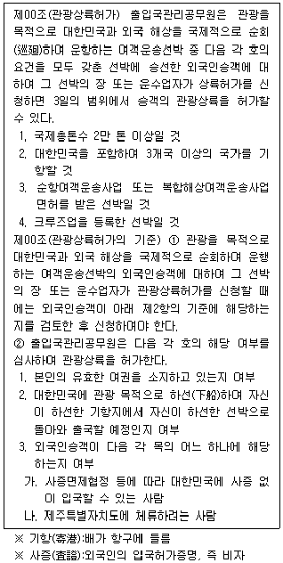
- 관광 목적의 여객운송선박에 탑승한 외국인승객이더라도 관광상륙허가를 받지 못할 수 있다.
- 관광상륙허가를 받은 외국인승객은 하선 후 상륙허가기간 내에 하선한 기항지의 하선한 선박으로 돌아가야 한다.
- 대한민국 사증이 없으면 입국할 수 없는 사람은 관광상륙허가를 받더라도 제주특별자치도에 체류할 수 없다.
- 관광 목적으로 부산에 하선한 후 인천에서 승선하여 출국하려고 하는 외국인승객은 관광상륙허가를 받을 수 없다.
- 국제총톤수 10만 톤으로 복합해상여객운송사업 면허를 받고 크루즈업을 등록한 선박 A가 관광 목적으로 중국－한국－일본에 기항하는 경우, 그 선박의 장은 승객의 관광상륙허가를 신청할 수 있다.
(정답률: 알수없음)
6. 다음 글과 <상황>을 근거로 판단할 때 옳은 것은?
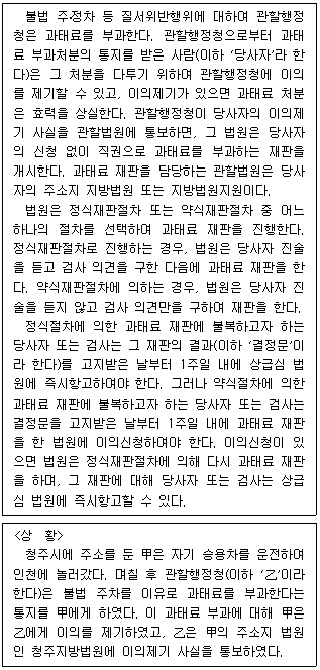
- 甲은 乙에게 이의제기를 하지 않고 직접 청주지방법원에 과태료 재판을 신청할 수 있다.
- 甲이 乙에게 이의를 제기하더라도 과태료 처분은 유효하기 때문에 검사의 명령에 의해 과태료를 징수할 수 있다.
- 청주지방법원이 정식재판절차에 의해 과태료 재판을 한 경우, 乙이 그 재판에 불복하려면 결정문을 고지받은 날부터 1주일 내에 상급심 법원에 즉시항고하여야 한다.
- 청주지방법원이 甲의 진술을 듣고 검사 의견을 구한 다음 과태료 재판을 한 경우, 검사가 이 재판에 불복하려면 결정문을 고지받은 날부터 1주일 내에 청주지방법원에 이의신청을 하여야 한다.
- 청주지방법원이 약식재판절차에 의해 과태료 재판을 한 경우, 甲이 그 재판에 불복하려면 결정문을 고지받은 날부터 1주일 내에 청주지방법원에 이의신청을 하여야 한다.
(정답률: 알수없음)
7. 다음 글과 <상황>을 근거로 판단할 때 옳은 것은?
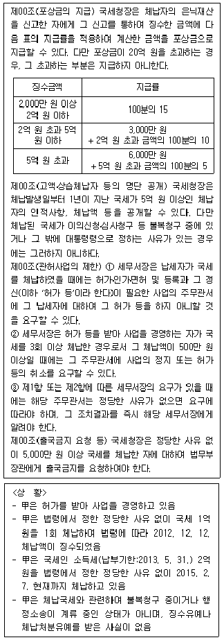
- 국세청장은 甲의 인적사항, 체납액 등을 공개할 수 있다.
- 세무서장은 법무부장관에게 甲의 출국금지를 요청하여야 한다.
- 국세청장은 甲에 대하여 허가의 갱신을 하지 아니할 것을 해당 주무관서에 요구할 수 있다.
- 2014. 12. 12. 乙이 甲의 은닉재산을 신고하여 국세청장이 甲의 체납액을 전액 징수할 경우, 乙은 포상금으로 3,000만 원을 받을 수 있다.
- 세무서장이 甲에 대한 사업허가의 취소를 해당 주무관서에 요구하면 그 주무관서는 요구에 따라야 하고, 그 조치결과를 즉시 해당 세무서장에게 알려야 한다.
(정답률: 알수없음)
8. 다음 글을 근거로 판단할 때 옳은 것은?
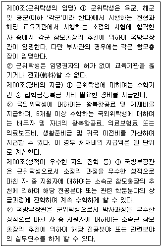
- 해군 장교가 군위탁생으로 추천받기 위해서는 해군에서 시행하는 전형과 해당 교육기관에서 시행하는 시험에 합격하여야 한다.
- 육군 부사관인 군위탁생이 다른 학교로 전학을 하기 위해서는 국방부장관의 허가를 받아야 한다.
- 석사과정을 우수한 성적으로 마친 군위탁생은 소속군 참모총장의 추천이 없어도 관련 학문분야 박사과정에 진학하여 계속 수학할 수 있다.
- 군위탁생의 경우 국내위탁과 국외위탁의 구별 없이 동일한 경비가 지급된다.
- 3개월의 국외위탁교육을 받는 군위탁생은 체재비를 지급받을 수 없다.
(정답률: 알수없음)
9. 다음 글을 근거로 추론할 때, ＜보기＞에서 옳은 것만을 모두 고르면?
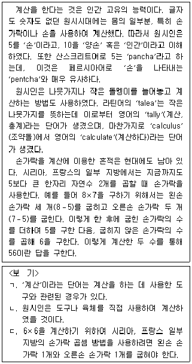
- ㄱ
- ㄴ
- ㄱ, ㄷ
- ㄴ, ㄷ
- ㄱ, ㄴ, ㄷ
(정답률: 알수없음)
10. 다음 <조건>을 근거로 판단할 때, ＜보기＞에서 옳은 것만을 모두 고르면?
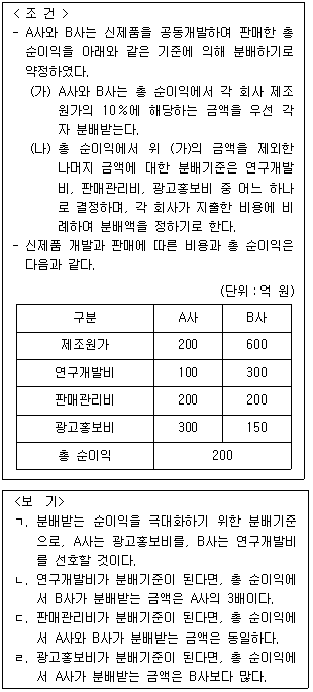
- ㄱ, ㄴ
- ㄱ, ㄷ
- ㄱ, ㄹ
- ㄴ, ㄹ
- ㄷ, ㄹ
(정답률: 알수없음)
11. 다음 글과 <상황>을 근거로 판단할 때, A가 지급하여야 하는 총액은?
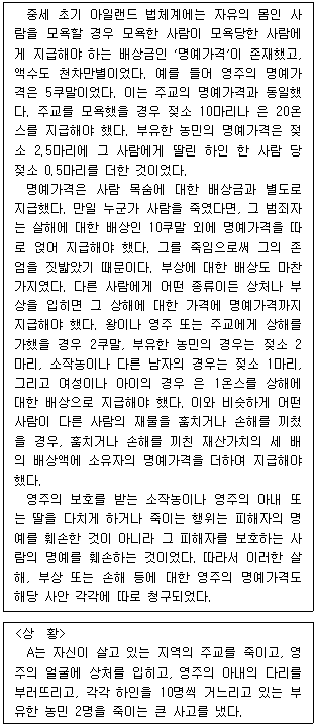
- 은 209온스
- 은 219온스
- 은 229온스
- 은 239온스
- 은 249온스
(정답률: 알수없음)
12. <여성권익사업 보조금 지급 기준>과 <여성폭력피해자 보호시설 현황>을 근거로 판단할 때, 지급받을 수 있는 보조금의 총액이 큰 시설부터 작은 시설 순으로 바르게 나열된 것은? (단, 4개 보호시설의 종사자에는 각 1명의 시설장(長)이 포함되어 있다)
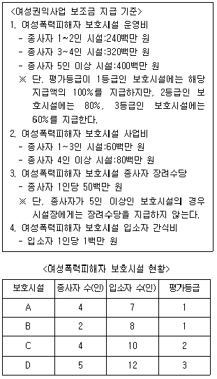
- A－C－D－B
- A－D－C－B
- C－A－B－D
- D－A－C－B
- D－C－A－B
(정답률: 알수없음)
13. 다음 글을 근거로 판단할 때, ＜보기＞에서 옳은 것만을 모두 고르면?
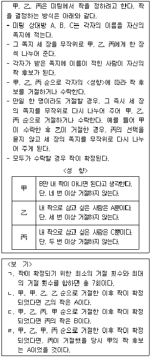
- ㄱ, ㄷ
- ㄱ, ㄹ
- ㄴ, ㄷ
- ㄴ, ㄹ
- ㄷ, ㄹ
(정답률: 알수없음)
14. 다음 글을 근거로 추론할 때, 언급된 작품 중 완성시점이 두 번째로 빠른 것은?
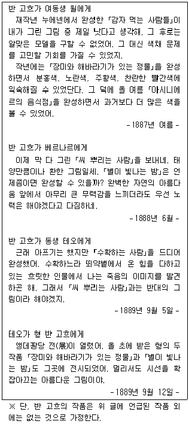
- 감자 먹는 사람들
- 별이 빛나는 밤
- 수확하는 사람
- 씨 뿌리는 사람
- 장미와 해바라기가 있는 정물
(정답률: 알수없음)
15. 우주센터는 화성 탐사 로봇(JK3)으로부터 다음의 <수신 신호>를 왼쪽부터 순서대로 받았다. <조건>을 근거로 판단할 때, JK3의 이동경로로 옳은 것은?
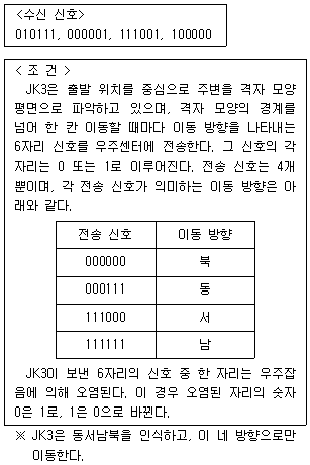
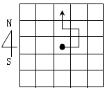
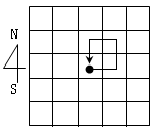
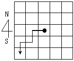
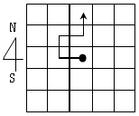
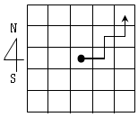
(정답률: 알수없음)
16. 다음 글을 근거로 <점심식단>의 빈 칸을 채워 넣을 때 옳지 않은 것은?
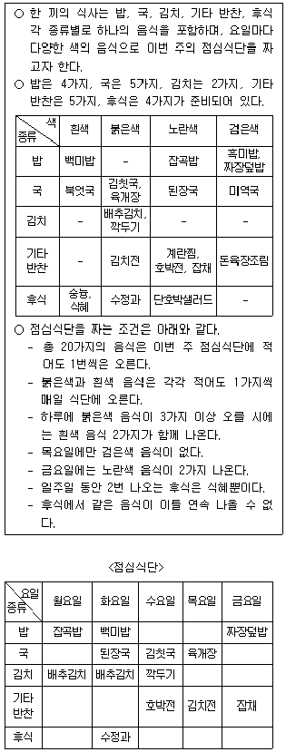
- 월요일의 후식은 숭늉이다.
- 화요일의 기타 반찬은 돈육장조림이다.
- 수요일의 밥은 흑미밥이다.
- 목요일의 밥은 백미밥이다.
- 금요일의 국은 북엇국이다.
(정답률: 알수없음)
17. 甲과 乙은 둘이서 승경도놀이를 하고 있다. 다음 글을 근거로 판단할 때, ＜보기＞에서 옳은 것만을 모두 고르면?
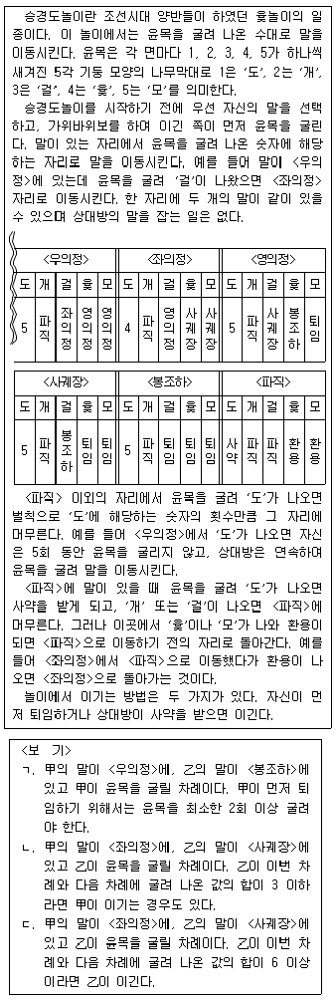
- ㄱ
- ㄷ
- ㄱ, ㄴ
- ㄴ, ㄷ
- ㄱ, ㄴ, ㄷ
(정답률: 알수없음)
18. 甲과 乙이 가위바위보 경기를 했다. 다음 <규칙>과 <상황>을 근거로 판단할 때, ＜보기＞에서 옳은 것만을 모두 고르면?
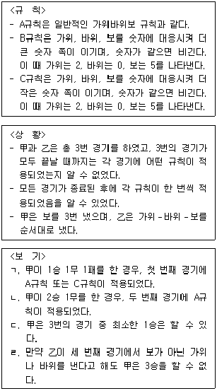
- ㄱ, ㄷ
- ㄴ, ㄷ
- ㄴ, ㄹ
- ㄱ, ㄴ, ㄹ
- ㄱ, ㄷ, ㄹ
(정답률: 알수없음)
19. 위의 글을 근거로 판단할 때, 사마욱, 순곤, 마속의 자로 옳게 짝지은 것은?(순서대로 사마욱, 순곤, 마속)(19번 공통지문 문제)
- 유달(幼達), 중자(仲慈), 유상(幼常)
- 계달(季達), 중자(仲慈), 중상(仲常)
- 계달(季達), 숙자(叔慈), 숙상(叔常)
- 계달(季達), 중자(仲慈), 유상(幼常)
- 유달(幼達), 맹자(孟慈), 중상(仲常)
(정답률: 알수없음)
20. 다음 글을 근거로 추론할 때 옳은 것은?
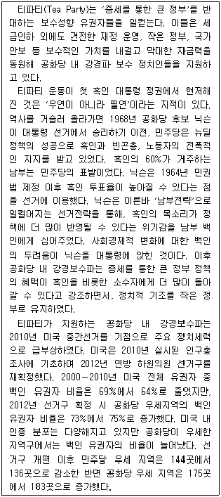
- 뉴딜정책 이후 티파티의 정치적 기반은 빈곤층과 남부의 흑인들이었다.
- 미국 선거에서 공화당이 유리해진 이유는 미국 전체 유권자 중 백인이 차지하는 비율이 증가했기 때문이다.
- 1960년대 공화당의 남부전략은 증세정책이 백인에게 유리하다고 남부의 백인 유권자를 설득하는 것이었다.
- 티파티는 소수인종의 복지 증진을 위하여 전반적인 세금인상을 지지한다.
- 다른 조건의 변화가 없다고 가정한다면, 2016년 연방 하원의원 선거에서 공화당이 민주당보다 유리할 것이다.
(정답률: 알수없음)
21. 다음 글을 근거로 판단할 때, ＜보기＞에서 옳은 것만을 모두 고르면?
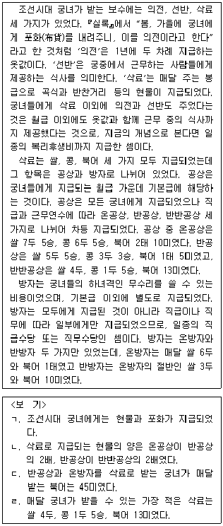
- ㄱ, ㄴ
- ㄱ, ㄹ
- ㄴ, ㄷ
- ㄱ, ㄷ, ㄹ
- ㄴ, ㄷ, ㄹ
(정답률: 알수없음)
22. 다음 글을 근거로 판단할 때, ＜보기＞에서 옳게 추론한 사람만을 모두 고르면?
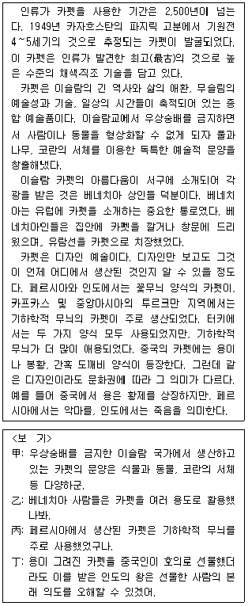
- 甲
- 乙, 丁
- 丙, 丁
- 甲, 丙, 丁
- 乙, 丙, 丁
(정답률: 알수없음)
23. 다음 글을 뒷받침할 근거로 제시될 수 있는 것만을 ＜보기＞에서 모두 고르면?
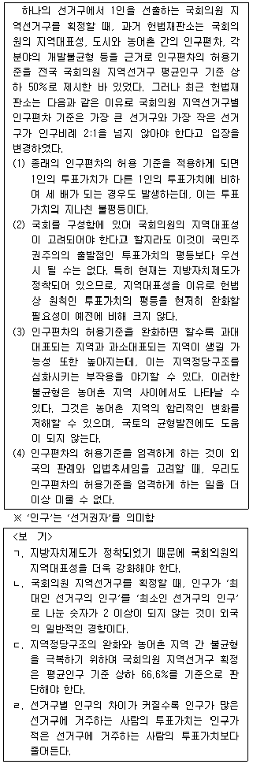
- ㄱ
- ㄴ, ㄷ
- ㄴ, ㄹ
- ㄷ, ㄹ
- ㄱ, ㄴ, ㄷ
(정답률: 알수없음)
24. 다음 글을 근거로 판단할 때, ＜보기＞에서 옳은 것만을 모두 고르면?
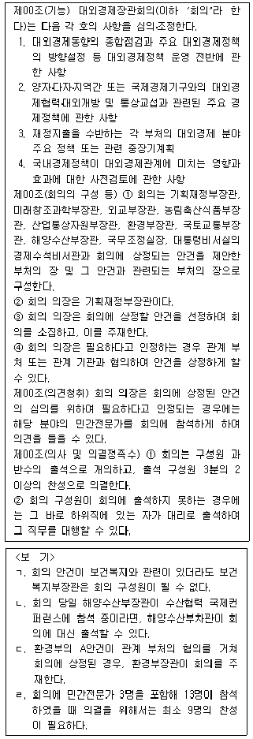
- ㄱ
- ㄴ
- ㄱ, ㄷ
- ㄴ, ㄹ
- ㄷ, ㄹ
(정답률: 알수없음)
25. 다음 글과 <상황>을 근거로 판단할 때 옳은 것은?
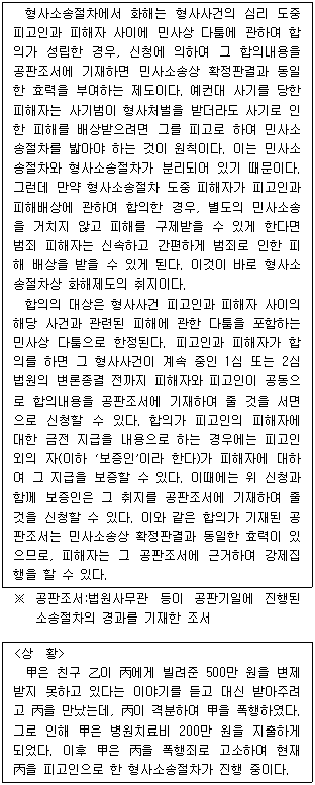
- 甲과 丙이 피해배상을 합의하면 그 합의는 공판조서에 기재되지 않더라도 민사소송상의 확정판결과 동일한 효력이 있다.
- 형사소송 2심 법원의 변론종결 후에 甲과 丙이 피해배상에 대해 합의하면, 그 합의내용을 공판조서에 기재해 줄 것을 구술로 신청할 수 있다.
- 丙이 乙에게 변제할 500만 원과 甲의 치료비 200만 원을 丙이 지급한다는 합의내용을 알게 된 법관은 신청이 없어도 이를 공판조서에 기재할 수 있다.
- 공판조서에 기재된 합의금에 대해 甲이 강제집행을 하기 위해서는 별도의 민사소송상 확정판결이 있어야 한다.
- 丙이 甲에게 지급할 금액을 丁이 보증한다는 내용이 공판조서에 기재된 경우, 甲은 그 공판조서에 근거하여 丁의 재산에 대해서 강제집행할 수 있다.
(정답률: 알수없음)
26. 다음 글을 근거로 판단할 때 옳은 것은?
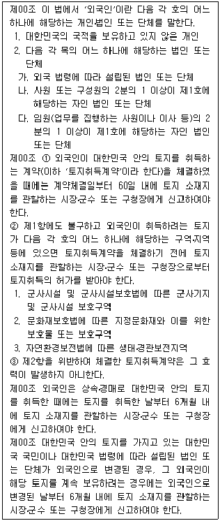
- 대한민국 국적을 보유하지 않은 甲이 전남 무안군에 소재하는 토지를 취득하는 계약을 체결한 경우, 전라남도지사에게 신고하여야 한다.
- 충북 보은군에 토지를 소유하고 있는 乙이 대한민국 국적을 포기하고 외국국적을 취득한 경우, 그 토지를 계속 보유하려면 외국국적을 취득한 날부터 6개월 내에 보은군수의 허가를 받아야 한다.
- 사원 50명 중 대한민국 국적을 보유하지 않은 자가 30명인 丙법인이 사옥을 신축하기 위해 서울 금천구에 있는 토지를 경매로 취득한 경우, 경매를 받은 날부터 60일 내에 서울특별시장에게 신고하여야 한다.
- 외국 법령에 따라 설립된 丁법인이 자연환경보전법에 따른 생태ㆍ경관보전지역 내의 토지(강원 양양군 소재)를 취득하는 계약을 체결한 경우, 계약체결 전에 양양군수의 허가를 받지 않았다면 그 계약은 무효이다.
- 대한민국 법령에 따라 설립된 戊법인의 임원 8명 중 5명이 2012. 12. 12. 외국인으로 변경된 후, 戊법인이 2013. 3. 3. 경기 군포시에 있는 토지를 취득하는 계약을 체결한 경우, 戊법인은 2013. 9. 3.까지 군포시장에게 신고하여야 한다.
(정답률: 알수없음)
27. 다음 글과 <상황>을 근거로 판단할 때, A지방자치단체 지방의회의 의결에 관한 설명으로 옳은 것은?
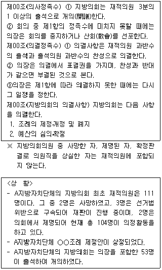
- 의결할 수 없다.
- 부결된 것으로 본다.
- 26명 찬성만으로 의결할 수 있다.
- 27명 찬성만으로 의결할 수 있다.
- 28명 찬성만으로 의결할 수 있다.
(정답률: 알수없음)
28. 다음 글과 <상황>을 근거로 판단할 때, A국 각 지역에 설치될 것으로 예상되는 풍력발전기 모델명을 바르게 짝지은 것은?(순서대로 X지역, Y지역, Z지역)
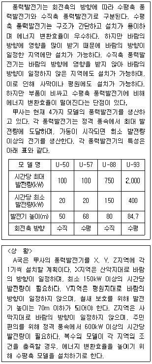
- U-88, U-50, U-88
- U-88, U-57, U-88
- U-93, U-50, U-88
- U-93, U-50, U-93
- U-93, U-57, U-93
(정답률: 알수없음)
29. 다음 글과 <A기관 벌점 산정 기초자료>를 근거로 판단할 때, 두 번째로 높은 벌점을 받게 될 사람은?
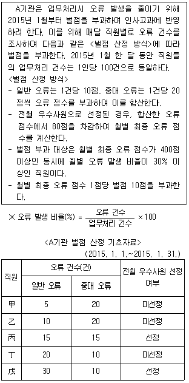
- 甲
- 乙
- 丙
- 丁
- 戊
(정답률: 알수없음)
30. 다음 <귀농인 주택시설 개선사업 개요>와 <심사 기초 자료>를 근거로 판단할 때, 지원대상 가구만을 모두 고르면?
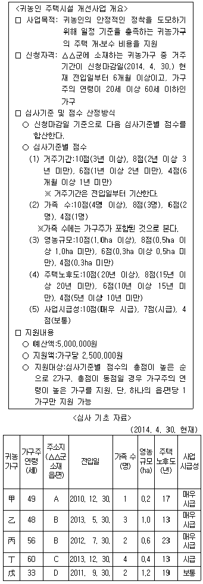
- 甲, 乙
- 甲, 丙
- 乙, 丙
- 乙, 丁
- 丙, 戊
(정답률: 알수없음)
31. 다음 글과 <2014년 아동안전지도 제작 사업 현황>을 근거로 판단할 때, ＜보기＞에서 옳은 것만을 모두 고르면?
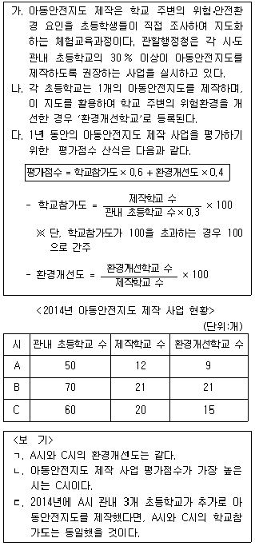
- ㄱ
- ㄴ
- ㄷ
- ㄱ, ㄴ
- ㄱ, ㄷ
(정답률: 알수없음)
32. 다음 글과 <상황>을 근거로 판단할 때 옳은 것은?
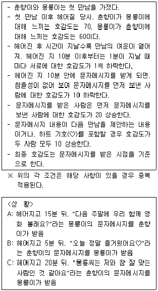
- 몽룡이가 춘향이에게 느끼는 최종 호감도는 상황 C가 가장 높다.
- 춘향이가 몽룡이에게 느끼는 최종 호감도는 상황 B가 가장 높다.
- 몽룡이가 춘향이에게 느끼는 최종 호감도는 상황 B가 상황 C보다 15 높다.
- 몽룡이가 춘향이에게 느끼는 최종 호감도는 상황 C가 상황 A보다 5 높다.
- 상황 B의 경우 몽룡이가 춘향이에게 느끼는 최종 호감도가 춘향이가 몽룡이에게 느끼는 최종 호감도보다 높다.
(정답률: 알수없음)
33. 다음 글과 <조건>을 근거로 판단할 때, A부에서 3인 4각 선수로 참가해야 하는 사람만을 모두 고르면?
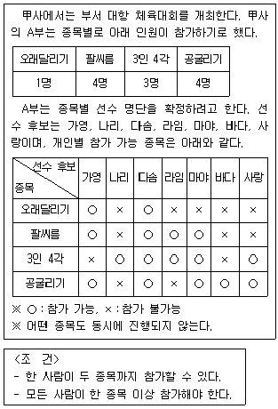
- 가영, 나리, 바다
- 나리, 다솜, 마야
- 나리, 다솜, 사랑
- 나리, 라임, 사랑
- 다솜, 마야, 사랑
(정답률: 알수없음)
34. 다음 글을 근거로 판단할 때, ＜보기＞에서 옳은 것만을 모두 고르면?
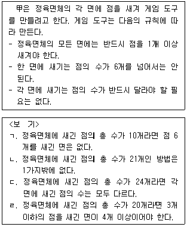
- ㄱ
- ㄱ, ㄴ
- ㄴ, ㄷ
- ㄷ, ㄹ
- ㄱ, ㄷ, ㄹ
(정답률: 알수없음)
35. 다음 글을 근거로 판단할 때, ＜보기＞에서 모든 방청객이 심사규칙을 정확하게 이해하고 투표했다면 탈락자 또는 우승자가 바뀔 수 있는 것만을 모두 고르면?
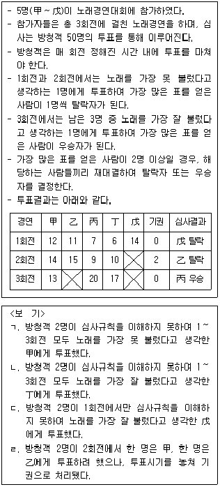
- ㄱ, ㄴ
- ㄱ, ㄷ
- ㄴ, ㄷ
- ㄴ, ㄹ
- ㄷ, ㄹ
(정답률: 알수없음)
36. 다음 <조건>과 <예시>를 근거로 판단할 때, <문자메시지>가 의미하는 실제접선시각은?
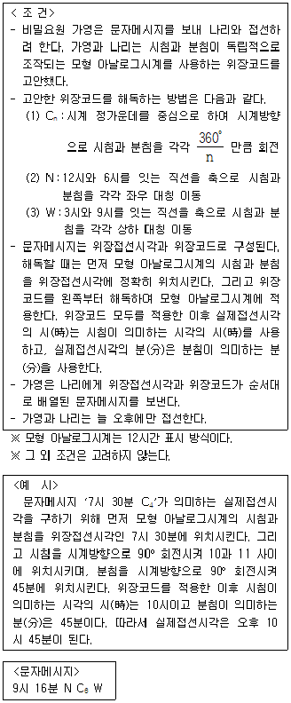
- 오후 1시 34분
- 오후 1시 36분
- 오후 2시 34분
- 오후 2시 36분
- 오후 3시 34분
(정답률: 알수없음)
37. 다음 글을 근거로 판단할 때, ＜보기＞에서 옳은 것만을 모두 고르면?
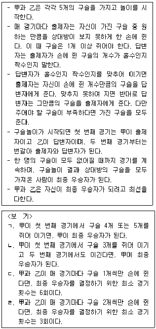
- ㄱ, ㄴ
- ㄱ, ㄹ
- ㄱ, ㄴ, ㄷ
- ㄱ, ㄷ, ㄹ
- ㄴ, ㄷ, ㄹ
(정답률: 알수없음)
38. 위의 글을 근거로 판단할 때, 김치의 숙성ㆍ저장과 관련한 설명으로 옳은 것은?(39번 공통지문 문제)
- 겨울에 담그는 김치의 적절한 소금물 농도는 여름에 담그는 김치의 적절한 소금물 농도보다 높다.
- 배추를 소금에 절이는 기간이 길어질수록 배추의 단맛은 더 강해진다.
- 김치를 담그면 처음부터 젖산발효에 의한 항균작용으로 잡균이 붙지 않는다.
- 겨울 김장김치의 적절한 소금물 농도는 7% 이상이다.
- 다른 조건이 동일하다면 소금물 농도 6%의 김치가 소금물 농도 2%의 김치보다 빨리 숙성된다.
(정답률: 알수없음)